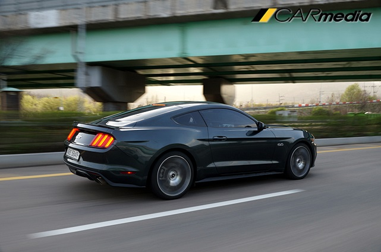
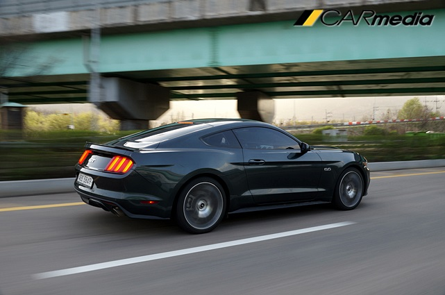

날 것 그대로의 야생마, 포드 머스탱 GT

【카미디어】 김성환 기자 = 요즘 차는 정말 똑똑해지고 있다. 아니, 너무 똑똑해졌다. 위대한 과학자들이 만든 첨단 장치들이 차의 지능을 부쩍 높여 놨다. 똑똑한 전자 장치의 발전으로 운전은 더 편해졌고, 속도는 더 빨리졌으며, 보다 안정적으로 달릴 수 있게 됐다. 그런데 이게 전부일까? 포스 머스탱 GT는 'NO'라고 답한다. 그리고 8기통 배기음을 거칠게 뿌리며 질주한다. '배기량이 깡패'라는 이 바닥 용어도 다시금 곱씹게 된다.
머스탱 GT는 똑똑하게 진화된 요즈음 모범생들과는 조금 다르다. 분명 똑똑하지만 '좀 놀 줄 아는' 우등생 분위기다. 아스팔트를 질주하고 있을 땐 뼈대 위에 엔진과 변속기만 얹은 '날 것 그대로의' 거친 감성이 깔린다. 맞다. 달리는 건 숫자가 전부가 아니다. 주판으로 튕기면서 달리는 게 아니라 땀을 흘리면서 달리는 게 진짜다. 땀 냄새만큼 그윽한 휘발유 냄새가 날 것 같은 8기통 엔진과 톱니바퀴 덩어리인 변속기의 순수함을 오랜만에 발견했다. 세상의 모든 차가 똑똑해져도 이런 차 한 대는 꼭 있어야 한다. 그게 머스탱 GT다.
그렇다고 머스탱에 전자장치가 아무것도 없는 건 아니다. 주행모드를 바꿀 때마다 지능이 쑥쑥 올라가면서 422마력의 스포츠카를 아스팔트에 침착하게 붙여놓는다. 게다가 이차는 가격대비 얻을 수 있는 것들이 상당히 많다. BMW 5시리즈 가격에 사서 멋진 스포츠카 분위기를 내며 8기통 배기음을 뿜어낼 수 있다. 심한 경우엔 뒷바퀴에 연기가 막 나는 ‘불량스러운 짓’도 할 수 있다. 시승기 밑에 '불량스러운 짓'을 직접 해본 영상이 있다. 참고로 <카미디어>는 이 영상을 안전 조치가 된 공터 한켠에서 촬영 했다. 일반도로에서 할 짓은 정말 아니다.
새로운 머스탱은 앞으로 길쭉하게 뻗은 보닛과 짧은 트렁크 라인이 인상적이다. 상어의 얼굴을 형상화한 앞모습은 매섭고 공격적이다. 보닛에는 두껍고 날카로운 선을 그려 넣었고, 커다란 공기흡입구를 뚫어놓았다. 헤드램프는 종전보다 작고 날렵하게 다듬어 강한 인상을 심어준다. 사다리꼴 모양의 대형 그릴과 휀더에 붙어있는 5.0 뱃지는 고성능 머스탱의 존재감을 뚜렷하게 보여준다.
가파르게 경사진 앞 유리창에서 느긋하게 뒷 유리로 이어지는 지붕선이 인상적이다. 종전의 투박했던 모습은 찾아볼 수 없고, 옛 머스탱의 패스트백 스타일이 돌아온 것 같다. 뒷 모습은 3분할된 테일램프가 가장 눈에 띈다. 크기도 크고 램프 사이를 검정색으로 칠해 깔끔하다. 방향지시등은 따로 없다. 제동등과 같이 붉은색 등이 깜빡 거린다. 최근 한-미 FTA로 인해 합의된 내용이라 문제될 건 없지만 처음에는 약간 어색하다. 두꺼운 범퍼 밑에는 굵은 배기구를 양쪽으로 나눠 뽑았고, 공기의 흐름을 원활하게 도와주는 디퓨저도 달았다.
실내는 항공기 조종석에서 영감을 받아 디자인 했다. 부드러운 곡선보다 곧게 뻗은 직선을 사용해 센터페시아를 완성했고, 버튼들의 모양도 직관적이다. 다만 버튼의 종류와 개수가 많아 익숙해지려면 시간이 걸릴 것 같다. 송풍구 사이에 있던 게이지는 계기반 안으로 들어갔다. 대신 송풍구 하나를 더 만들어 GT모델에는 가운데 송풍구가 총 3개다.
전체적인 공간은 크다. 길이와 휠베이스는 종전과 같지만 너비가 4cm 넓어졌다. 덕분에 조금 더 여유로운 공간을 가질 수 있게 됐다. 뒷좌석도 생각보다 넓다. 쿠페라서 몸을 구겨 넣거나 비좁다는 생각은 들지 않는다. 트렁크에는 골프 백 2개 정도를 넣을 수 있도록 만들어졌다.
머스탱 GT의 힘은 폭발적이다. 최고출력 422마력, 최대토크 54.1kg.m를 뿜어내는 V형 8기통 5리터 엔진이 들어가 머슬카 감성을 뿜어낸다. 시동을 켜는 것부터 예사롭지 않다. 두껍고 굵은 소리를 토해내며 앞으로 나갈 준비를 한다. 이후 가속 페달을 깊게 밟으면 육중한 몸을 이끌고 빠르게 달려나간다. 넘치는 힘을 주체하지 못해 바퀴가 헛돌기도 한다. 경쾌하게 속도를 올리는 경량 스포츠카나 고성능 소형 헤치백의 느낌과는 정 반대다. 묵직하게 차체를 짓누르며 튀어 나가는데 무섭기까지 하다.
 

이 차는 5리터 자연흡기 엔진이다. 최근 대세인 고성능 터보엔진 자동차와는 확실히 다른 느낌이다. 조금의 망설임 없이 원하는 순간에 가속페달을 밟으면 즉각 반응한다. 매우 강력해서 깜짝깜짝 놀라기도 한다. 강력한 엔진과 조화를 이루는 6단 자동변속기는 꽤 무난하다. 뛰어난 조합을 이루지는 않지만 그렇다고 엔진의 성능을 떨어트리지도 않는다. 가속패달을 끝까지 밟으면 변속 포인트가 뒤로 물러나면서 대배기량 엔진의 힘을 끝까지 풍부하게 느낄 수 있다.
코너링은 역시 미국차다. 이전 머스탱에 비해 확실히 팽팽해졌지만, 유럽 스타일은 전혀 아니다. 여전히 미국 스타일이다. 도로의 굴곡을 너그럽게 받아들이며 급 코너링 때도 아스팔트를 못 살게 굴지 않는다. 핸들을 돌리면 차는 꽤 기울어지지만 그렇다고 타이어가 밀리는 건 아니다. 그런데 핸들을 돌릴 때마다 엉덩이가 바깥 쪽으로 나가면서 꽤 불안하다. 6천km를 달린 신차인데, 뒷 타이어가 거의 닳았다. 누군가 뒷바퀴를 심하게 헛돌리면서 뭔가를 했던 것 같다. 타이어 문제로 인해 아스팔트를 쥐어 잡는 '그립감'을 제대로 못 느꼈다. 다음 기회에 멀쩡한 타이어가 끼워진 머스탱 GT를 타 보면서 그 느낌을 전하도록 하겠다.
머스탱 GT에는 각 상황에 따라 운전 모드를 바꿀 수 있는 ‘셀렉터블 드라이브 모드’기능이 있다. 일상적인 주행에 사용하는 노멀과 역동적인 스포츠, 스포츠 플러스, 차체제어장치를 끄고 조금 더 하드코어하게 달릴 수 있는 체커모드, 눈길 등에 사용하는 스노우 모드 등 총 4종류다.

셀렉터블 드라이브는 각각의 성격차이가 확실해 운전 재미를 키워주는 중요한 기능이다. 노멀모드는 말 그대로 평범하다. 일반 세단을 타는 것처럼 본성을 숨기고 조용히 다닌다. 반면 스포츠와 스포츠 플러스 모드는 서서히 달릴 준비를 끝마친 ‘말‘처럼 기회를 노리고 있다가 가속 페달을 밟으면 민감하게 튀어 나가며 박진감을 선사한다. 트랙모드는 단연 압권이다. 강력한 힘은 그대로 전달되지만 차를 안전하게 잡아주는 장치는 모두 꺼져있다. 때문에 항상 긴장감을 유지한 체 달려야 한다. 조금만 잘못하면 차는 몸을 이리저리 뒤틀며 밖으로 나갈 것 같다. 한적한 공터나 되도록이면 서킷에서 사용하는 것이 좋겠다.
재미있는 기능도 숨어있다. ‘라인 록(Line Lock)’ 기능이다. 앞쪽 브레이크를 강제로 잠근 후 뒤쪽 브레이크만 따로 풀어놓는 것으로, 이 때 가속페달을 밟으면 차는 좌우로 요동치며 뒷바퀴만 헛돌게 된다. 연기와 함께 뒷 타이어를 태우며 헛도는 번아웃 효과를 낼 수 있다. 하지만 자주 사용하기에는 부담이 크다. 운행키로 수가 많지 않았던 시승차도 타이어 마모도가 꽤 심했고, 많은 양의 연기로 인해 따가운 주위 시선을 받을 수도 있다.
6,035만 원, 포드 머스탱 GT의 가격이다. 커다란 차체와 개성 있는 머슬카 디자인, 강력한 성능 등을 생각하면 ‘착한 가격’이 분명하다. 경쟁차종도 드물다. 같은 미국차이며, 동급 경쟁자인 쉐보레 카마로가 유일하다. 이마저도 국내 판매 중인 카마로는 머스탱 GT에 비하면 한참 모자란 성능을 가졌다.

포드 머스탱의 세부 가격은 2.3리터 에코부스트 모델 기준으로 쿠페가 4,535만 원, 컨버터블이 5,115만 원이다. 시승했던 머스탱 GT 쿠페는 6,035만 원이다. 모두 부가세 포함 가격이다.